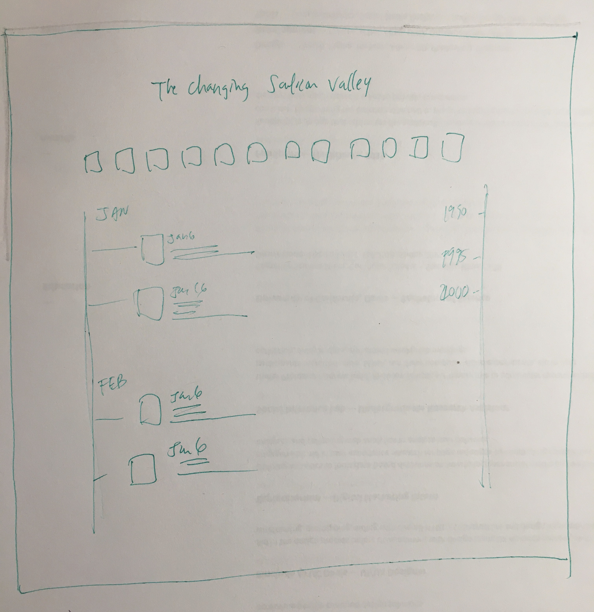

Cynthia Chen Back Home
This low-fidelty sketch shows the basic layout of this timeline showing the changing in the dynamics of Silicon Valley.

This low-fidelty sketch shows the basic layout of this timeline showing the changing in the dynamics of Silicon Valley.